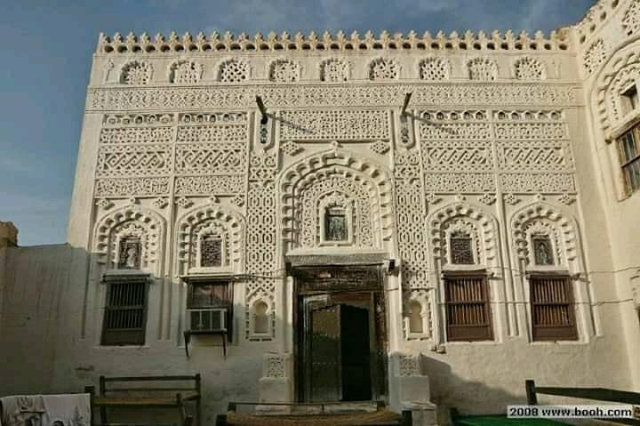

Cultural Heritage - Yemen
Yemeni's Historical Cities
Old City of Sana'a
Situated in a mountain valley at an altitude of 2,200 m, Sana’a has been inhabited for more than 2,500 years. In the 7th and 8th centuries the city became a major centre for the propagation of Islam. This religious and political heritage can be seen in the 103 mosques, 14 hammams and over 6,000 houses, all built before the 11th century. Sana’a’s many-storeyed tower-houses built of rammed earth (pisé) add to the beauty of the site.


Old Walled City of Shibam
Surrounded by a fortified wall, the 16th-century city of Shibam is one of the oldest and best examples of urban planning based on the principle of vertical construction. Its impressive tower-like structures rise out of the cliff and have given the city the nickname of ‘the Manhattan of the desert’.


Historic Town of Zabid
Zabid's domestic and military architecture and its urban plan make it an outstanding archaeological and historical site. Besides being the capital of Yemen from the 13th to the 15th century, the city played an important role in the Arab and Muslim world for many centuries because of its Islamic university.


Al-Jawf City
Al-Jawf was the core area of one of the most ancient of the South Arabian kingdoms, the state of Maʿīn (c. 1000 BCE–2nd century BCE). From their capital, Qarnaw, the Minaeans of Maʿīn ruled over large sections of the southern Arabian Peninsula. The oases ofAl-Jawf were a fertile and densely populated area, with many towns. After the conquest of Yemen by the Abbasids in the 9th century CE, however, the power centres of Yemeni civilization moved to the west, and the region was neglected.